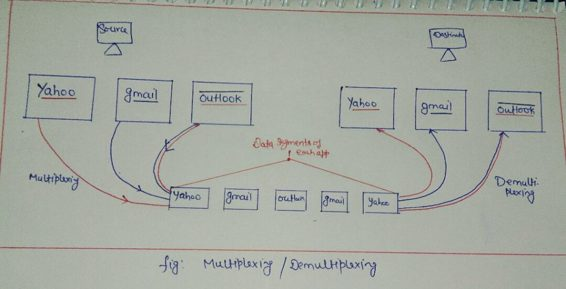
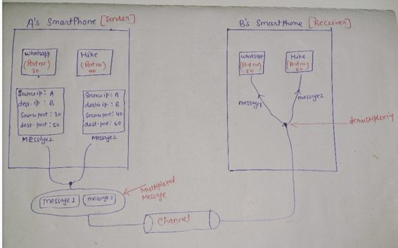

Prerequisite – Layers of OSI Model
Multiplexing and Demultiplexing services are provided in almost every protocol architecture ever designed. UDP and TCP perform the demultiplexing and multiplexing jobs by including two special fields in the segment headers: the source port number field and the destination port number field.
Multiplexing –
Gathering data from multiple application processes of sender ,enveloping that data with header and sending them as a whole to the intended receiver is called as multiplexing.
Demultiplexing –
Delivering received segments at receiver side to the correct app layer processes is called as demultiplexing.

Figure – Abstract view of multiplexing and demultiplexing
Multiplexing and demultiplexing are the services facilitated by the transport layer of OSI model.

Figure – Transport layer- junction for multiplexing and demultiplexing
There are two types of multiplexing and multiplexing :
- Connectionless Multiplexing and Demultiplexing
- Connection-Oriented Multiplexing and Demultiplexing
How Multiplexing and Demultiplexing is done –
For sending data from an application at sender side to an application at the destination side, sender must know the IP address of destination and port number of the application (at the destination side) to which he want to transfer the data. Block diagram is shown below :

Figure – Transfer of packet between applications of sender and receiver
Let us consider two messaging apps that are widely used now a days viz. Hike and whatsapp. Suppose A is the sender and B is the receiver. Both sender and receiver have these applications installed in their system (say smartphone). Suppose A want to send messages to B in whatsapp and hike both. In order to do so, A must mention the IP address of B and destination port number of the whatsapp while sending the message through whatsapp application. Similarly, for the later case, A must mention the IP address of B and destination port number of the hike while sending the message.
Now the messages from both the apps will be wrapped up along with appropriate headers(viz. source IP address, destination IP address, source port no,destination port number) and sent as a single message to the receiver. This process is called multiplexing. At the destination, received message is unwrapped and constituent messages (viz messages from hike and whatsapp application) are sent to appropriate application by looking to the destination the port number. This process is called demultiplexing. Similarly, B can also transfer the messages to A.

Figure – Message transfer using whatsapp and hike messaging application
References –
Multiplexing/Demultiplexing
dcs.bbk.ac.uk